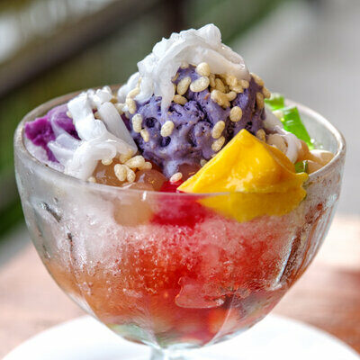

HALO - HALO
Description
Halo-halo is a traditional Filipino shaved ice dessert that's topped with a rainbow of delicious ingredients. The beauty of halo-halo is how easy it is to assemble. You'll start by arranging the shaved ice in bowls or a tall glass, then go crazy with the toppings, from kaong (sugar palm fruit in syrup) to sweet chickpeas to ube ice cream.
Time to Make:
PREP TIME: 10 mins
TOTAL TIME: 15 mins
Ingredients
- 1 1/2 c. shaved ice
- 1/2 c. sweet chickpeas
- 1/2 c. sweet red mung beans
- 1/3 c. nata de coco (coconut gel in syrup)
- 1/4 c. kaong (sugar palm fruit in light syrup)
- 1 tbsp. ube halaya (sweet purple yam paste)
- 2 large or 2 small scoops ube ice cream
- 2 (2") cubes coconut pudding or flan
- 1/2 c. evaporated milk
- Coconut flakes, for serving (optional)
Instructions:
- In 2 serving bowls or tall, large glasses, cover bottoms with shaved ice.
- Top ice with chickpeas, mung beans, nata de coco, kaong, and ube halaya. Top with ube ice cream and coconut pudding, then pour milk over. Sprinkle with coconut flakes, if using.